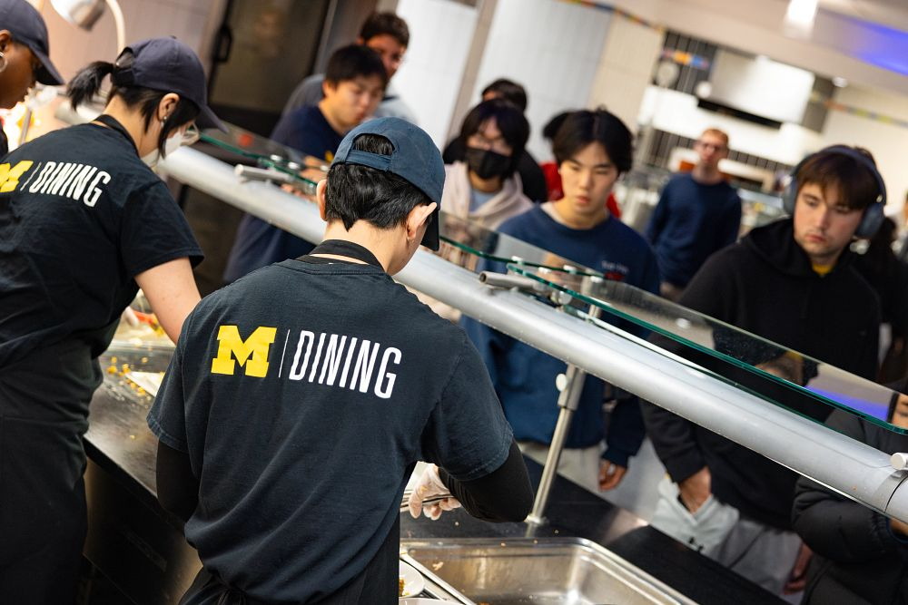

Your Comprehensive Guide to Resources for Graduate School Success
This guide is set up to help you be successful inside and outside of the classroom, and support you in finding resources available to them on campus.
Enhance academic success
Maximize your academic success at UM. Here are some resources to help support your studies:
Sweetland Writing Center: Check out writing courses, workshops and peer consultation for undergraduates and graduates.
English Language Institute: Takes courses to prepare you to teach English as a second or foreign language.
Success Coaching: Gain support with time management, study skills, and campus resources beyond advising.
Services for Students with Disabilities: Access workshops, coaching and other educational intiatives to develop learning strategies.
Improve school/life balance
Graduate school is more than just academics. Cultivating a balanced life is crucial. To help you enjoy life outside of the classroom, consider the following resources:
Student Organizations: Join one of the many student organizations to meet peers with similar interests and passions.
Arts and Culture: With events, exhibits, and performances taking place all year long, discover UM's thriving arts scene.
Career Services: Get ready for your professional future by utilizing networking opportunities, career counseling, and job search tools.
Community Engagement: Participate in community service initiatives and volunteer opportunities in your area.
Housing and Dining: Find out about UM on-campus housing options and dining services.
UMSI out in the fall!

UMSI out in the fall!
Access resources in times of crisis
Physical Health
A healthy body is key for success. Check out resources available from the University of Michigan to assist you in maintaining optimal physical health:
Recreational Sports: Stay active and healthy by joining fitness programs, sports clubs or use gym's amenities.
University Health Service (UHS): Access comprehensive medical care, including regular check-ups, vaccinations, and specialist referrals.
University Health Services Building
Mental Health
Keeping your mental health in check is essential to succeeding in graduate school. The following resources can help you with your mental health:
Counseling and Psychological Services (CAPS): Get crisis intervention programs, classes, group therapy, and individual counseling.
Wellness Coaching: Develop well-being management techniques with a wellness coach to combat stress.
Mindfulness Resources: Develop a quiet and concentrated mind through mindfulness and meditation exercises.
Peer Support Groups: Participate in peer support groups to learn about common experiences and coping mechanisms.